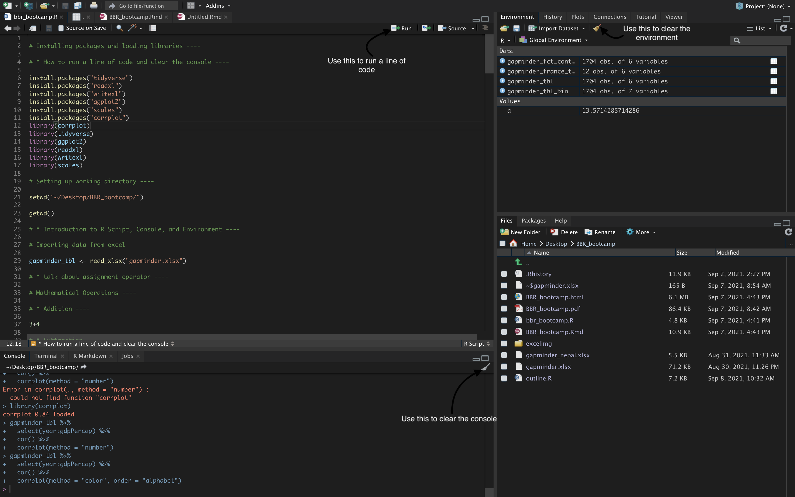

Today’s Goals
- Introduce you to some regular R commands.
- Read in a dataset.
- Here we will import the data from excel.
- Manipulate the dataset.
- Here we will create a new dataset with observations coming from France only.
- We will also take a look at the population of different continents in the year 1952.
- We shall work on some examples as well.
- Create a simple visualization using the same dataset.
- Here we will create a simple bar chart that shows the population of different continents in the year 1952.
- Run a simple statistical analysis- correlation plot.
Running a line of code, clearing console, and clearing environment

- If you follow the arrows in the above picture, you’ll learn the
following:
- Learn how to run a line of code
- Learn how to clear the console and the environment
Introduction to
install.packages() and library()
install.packages()andlibrary()go hand-in-hand for the first time. If you have installed a certain package previously, then you don’t need to reinstall the package every time you open a new R session. When you open a new R session, just run thelibrary(package_name)to load that certain package.
Introduction to
set.wd() and get.wd()
set.wd()allows us to set a working directory.get.wd()allows us to see what working directory we are in right now.
Introduction to R script, console, and environment.
An R script is simply a text file containing (almost) the same commands that you would enter on the command line of R. (top left box)
The console window (in RStudio, the bottom left panel) is the place where R is waiting for you to tell it what to do, and where it will show the results of a command. (bottom left box)
Lastly, environment is a collection of all the objects, variables, and functions. (top right box)
Data on Excel

- Here we are trying to import the data from excel sheet. Once we import, we will see the same data in our R session.
Importing the Gapminder excel file
gapminder_tbl <- read_xlsx("gapminder.xlsx")
- The assignment operator is used to assign a value.
gapminder_tbl
# A tibble: 1,704 × 6
country continent year lifeExp pop gdpPercap
<chr> <chr> <dbl> <dbl> <dbl> <dbl>
1 Afghanistan Asia 1952 28.8 8425333 779.
2 Afghanistan Asia 1957 30.3 9240934 821.
3 Afghanistan Asia 1962 32.0 10267083 853.
4 Afghanistan Asia 1967 34.0 11537966 836.
5 Afghanistan Asia 1972 36.1 13079460 740.
6 Afghanistan Asia 1977 38.4 14880372 786.
7 Afghanistan Asia 1982 39.9 12881816 978.
8 Afghanistan Asia 1987 40.8 13867957 852.
9 Afghanistan Asia 1992 41.7 16317921 649.
10 Afghanistan Asia 1997 41.8 22227415 635.
# … with 1,694 more rowsSome Mathematical Operations
Addition
3+4
Subtraction
5-3
Multiplication
3*5
Division
3/4
Raised to the power
3^4
Assigning value to a variable “a”
a <- 3+4
a
Overwriting a variable
a <- 95/7
a
Data Types
Some common data types that we will learn today are:
- Numeric: Anything that is numerical.
- Character: Anything inside quotation marks.
- Factors: Conceptually, factors are variables in R which take on a limited number of different values, and such values are called categorical variables.
- Logical: TRUE/ FALSE
Manipulating Dataset
What is a pipe operator?
- Pipe operator is denoted by symbol
%>%. Shortcut for the pipe operator isShift + CMD/ CTRL + M - Pipe operator allows us to pass the output of a function as a input to the other one in sequence.
view()
view()allows us to take a look at the whole dataset.
glimpse()
glimpse()allows us to take a quick glance at the structure of our dataset. It allows us to see what type of variables are present in our dataset.
head()
head()returns the first six observations from our dataset.
tail()
tail()returns the last six observations from our dataset.
select() and why we
use select()?
Imagine we are working on a hypothetical dataset with 150 columns. Out of those 150 columns we only need 5 columns at max. This is when
select()comes in handy.In our dataset, let’s say we only want country, continent, year, and population as our columns.
Using
everything() to select the rest of the columns
- Now, let’s say we want the continent column at the very beginning followed by remaining columns.
- In the code chunk below,
everything()allows us to select rest of the columns instead of manually typing them out.
gapminder_tbl %>%
select(continent, everything())
filter()
filter()allows us to filter the observations by rows.- One of our main goals today is to create a dataset with observations coming from France only.
- Here’s how we do it:
- I know, you are seeing a double equals to
==. This==is an equality operator. This allows you to see whether two objects are equal or not. - However, when using
filter(), double equals (==) means equal to and!=means not equal to. - Using a single equals sign will often give an error message that is not intuitive, so make sure you check for this common error.
Let’s work on some examples:
- Let’s say we only want observations from Asia
- Let’s say we only want observations from the year 1952
- Let’s say we don’t want observations from Europe
# gapminder_tbl %>%
# filter(continent == "Asia")
#
# gapminder %>%
# filter(year == 1952)
#
# gapminder %>%
# filter(continent != "Europe")
count()
count()allows us to quickly count unique values of one or more variables.- Let’s say we want to know how many times a particular continent appeared in our dataset.
sort = TRUEarranges the column in descending order.
mutate()
mutate()allows us to create new columns or modify the existing columns.- Let’s say we want to increase the population of every country by 10 times.
- The code chunk below demonstrates an example of creating new column
using
mutate().
Converting a character variable into categorical variable and vice versa
arrange()
arrange()allows us to arrange columns in ascending (aesc(variable_name)) or descending (desc(variable_name)) order.- Default is ascending order.
Creating bins using
ntile()
ntile()takes in your entire column and decides what cut-points to use and bins it accordingly into however many bins you want.
ntile() and
case_when()
group_by() and
summarise()
group_by()andsummarise()always go hand-in-hand.group_by()takes an existing table and converts it into a grouped table where operations are performed. And, these operations are performed usingsummarise()- Once you use,
group_by()andsummarise(), make sure toungroup(). - Let’s say we want to know the population of each continent in year 1952.
Visualization
- We have gone over most of the functions above that we are going to use in this section.
- One new function that is very important in this section is
ggplot()which comes from ggplot2 library. ggplot()allows us to create plots using the data.
Non-sorted visualization
gapminder_tbl %>%
filter(year == 1952) %>%
group_by(continent) %>%
summarise(total_population = sum(pop)) %>%
ungroup() %>%
# arrange(desc(total_population)) %>%
mutate(continent = as.factor(continent)) %>%
# Visualize
ggplot(aes(continent, total_population))+
geom_col(fill = "#2c3e50", width = 0.5)+
scale_y_continuous(labels = scales::comma)+
theme_minimal()+
labs(title = "Population of Different Continents in 1952",
x = "",
y = "Population",
subtitle = "",
caption = "Data Source: Gapminder")
Sorted Visualization
gapminder_tbl %>%
filter(year == 1952) %>%
group_by(continent) %>%
summarise(total_population = sum(pop)) %>%
ungroup() %>%
arrange(desc(total_population)) %>%
mutate(continent = as_factor(continent)) %>%
# Visualize
ggplot(aes(continent, total_population))+
geom_col(fill = "#2c3e50", width = 0.5)+
scale_y_continuous(labels = scales::comma)+
theme_minimal()+
labs(title = "Population of Different Continents in 1952",
x = "",
y = "Population",
subtitle = "",
caption = "Data Source: Gapminder")
Saving
gapminder_france_tbl as an excel file
write_xlsx()allows us save our table as an excel file.- How to:
write_xlsx(name_of_the_table_in_R, path = "wherever_you_want_to_save/give_a_name.xlsx")
# writexl::write_xlsx(gapminder_france_tbl, path = "gapminder_france.xlsx")
Correlation Plot
Plot 1
Plot 2